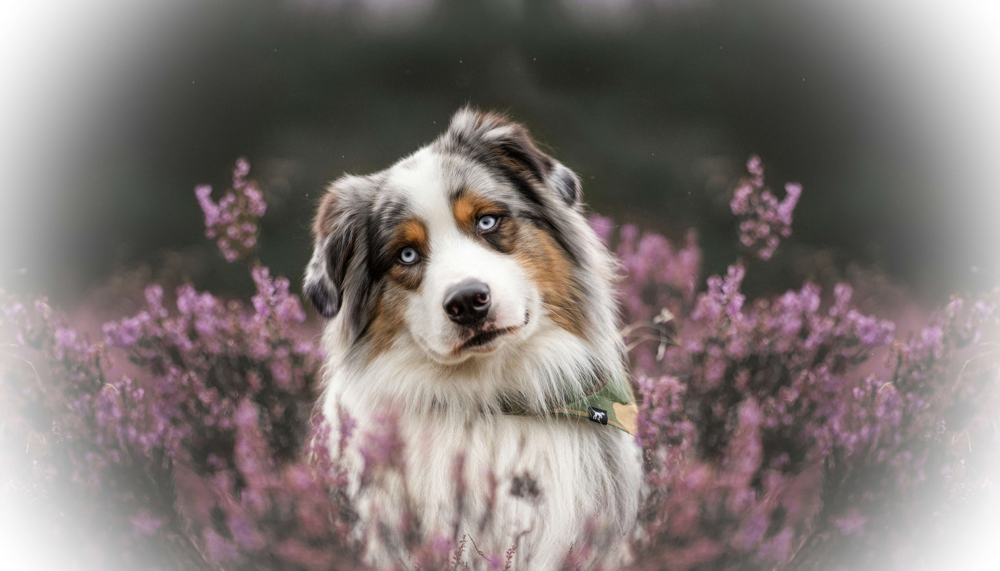

Welcome to Awesone Aussies!
Thinking about adding a new fluffy member to your family but unsure if the Australian Shepherd is the right breed for you? On this page you will find everything you need to know about the energetic, happy and loving Aussie so you can make the right choice. Below you will also finds some links to kennels
